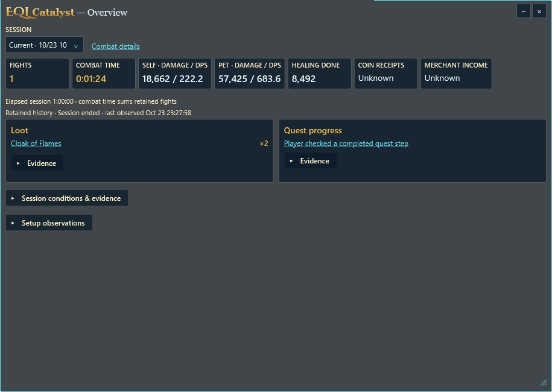
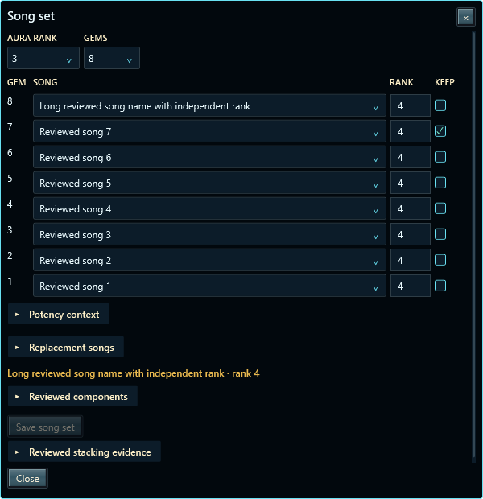
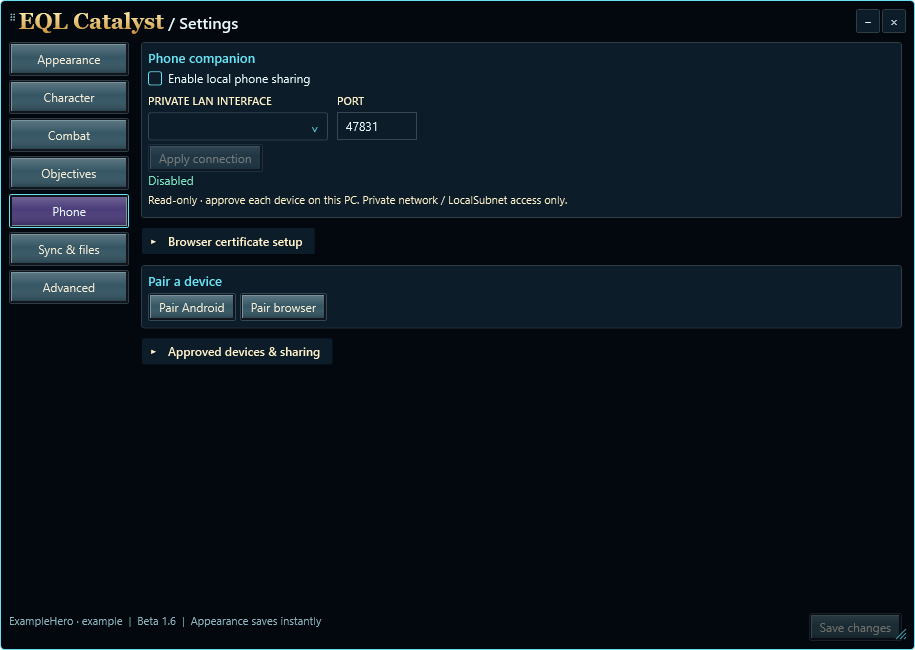
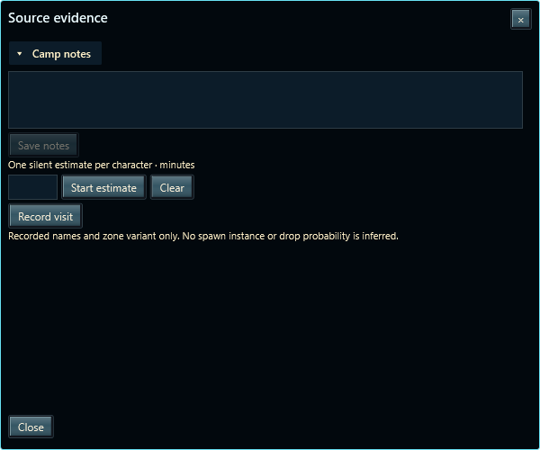
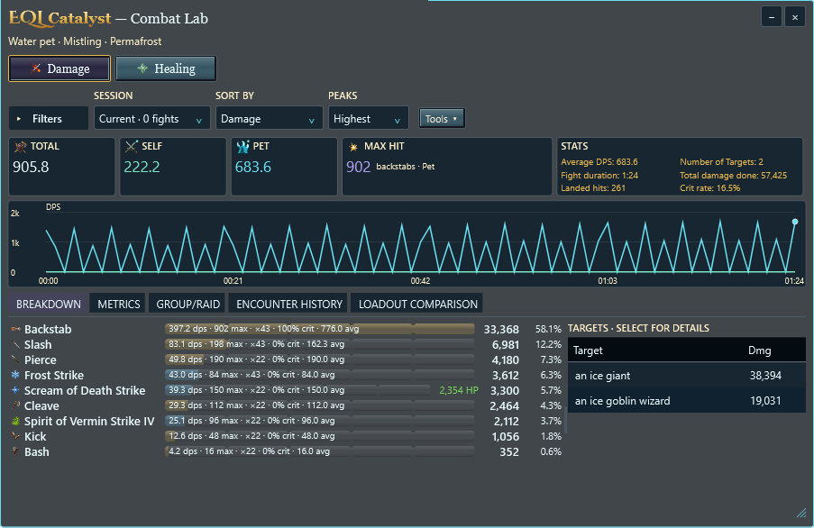

Overview and compact Windows controls
Actual WPF captures with synthetic evidence. Overview summarizes sessions; Tracker manages goals and loadouts, and Combat Lab retains detailed analysis. The shared bar keeps independent workspace sizes and saves all three button positions.
Overview help
28-DIP bar · 24-DIP workspace buttons · independent resizing and reordering.

915 × 650 DIP initially; 640 × 420 minimum. Loot and Quest progress stack below 760 DIP of content width. Evidence and conditions remain collapsed.

One selected-song evidence area, searchable replacements and one potency disclosure. Save is disabled until valid values change.
Existing authenticated read-only sharing, with compact connection controls.Source notes and attached workspaces

Personal notes and optional silent estimates; no inferred spawn probability.
Session browsing, Filters, Tools and encounter inspection retain the verified Beta 1.6 layout.Verification includes real control bounds, keyboard focus, shared resize lifecycle, all three themes and 100/150/200/300% synthetic rendering. Physical multi-monitor transitions and live-game acceptance remain separate. Artwork and published releases are unchanged.